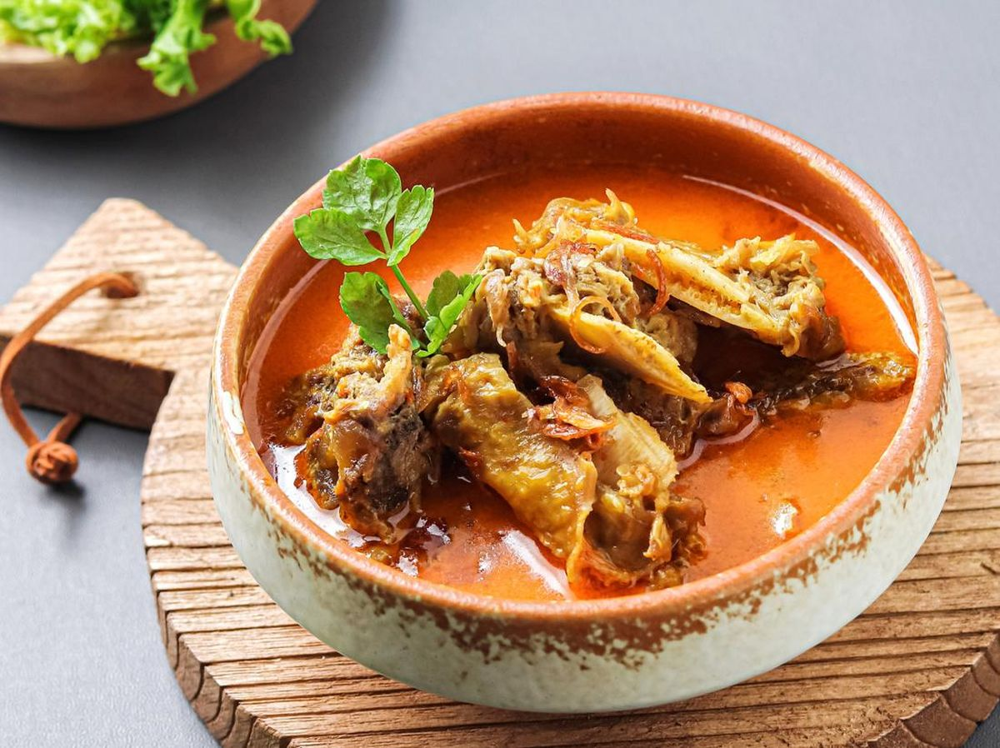

Gulai is a spicy Indonesian dish resembling a stew or a thick soup. Because of its appearance and taste, it is often dubbed as the Indonesian curry. Any meat variety can be the main ingredient in gulai, as well as offal, seafood, or vegetables. The ingredients are cooked in a combination of coconut milk and spices until the sauce achieves a thick consistency. Gulai originated in Sumatra, most likely under Indian culinary influence, but nowadays it is enjoyed everywhere in Indonesia. The dish can be found at Indonesian hawker centers and traditional restaurants.
Meal prep time : 1 hour 40 minutes
Servings : 8